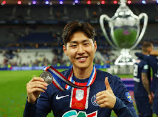

This is Leegangin.
대한민국 국적의 파리 생제르맹 FC 소속 축구 선수. 주 포지션은 공격형 미드필더. 2019 U-20 월드컵에서 대한민국의 준우승을 이끌며 골든볼을 수상했고 대한민국 남자 선수 최초로 FIFA 주관 대회 결승전 득점을 기록한 선수이자[26], 아시아인 최초로 유러피언 트레블을 달성한 선수이다.

This is important.